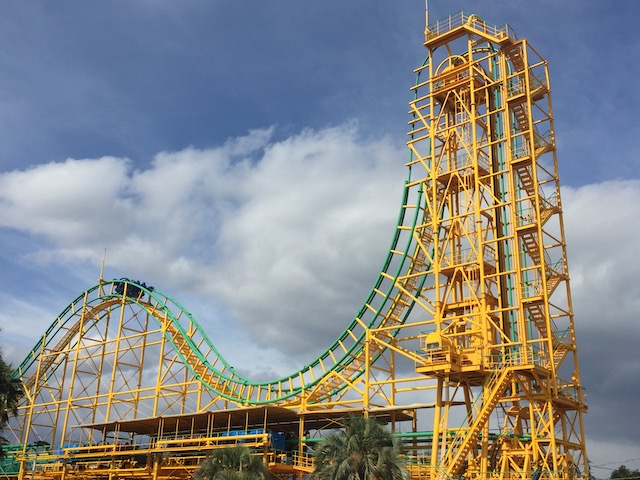
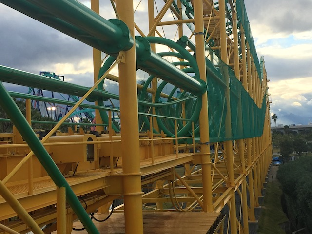
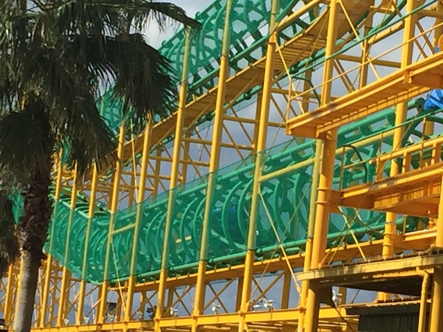
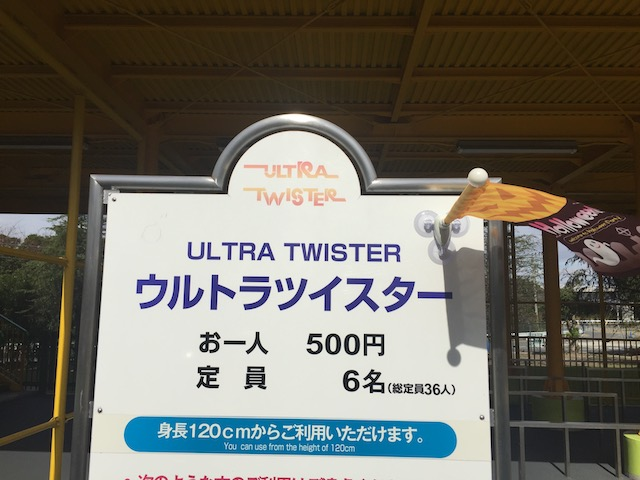
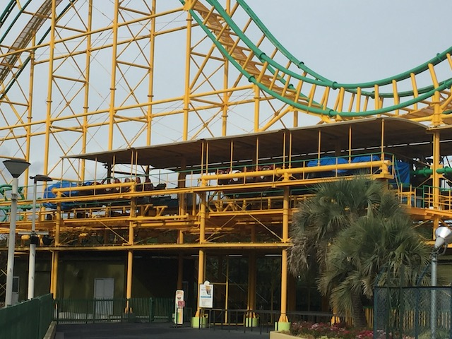

| |
Ultra Twister Review

We're here at Nagashima Spaland. Today's ride we'll be reviewing for you is Ultra Twister. The parks Ultra Twister. Now if you're Japanese (thank you for reading Incrediblecoasters), these are no big deal. Ultra Twisters are semi-common in Japan. But outside Japan, they don't exist. So for all non-Japanese folks, they'll look at this ride and go "WTF is that coaster?". Some enthusiasts may think that this ride looks familiar. Either because they grew up playing RCT and remember the Heartline Coaster, and building those. Or they're from Houston and remember back when Ultra Twister (the only one outside Japan) was at Six Flags Astroworld back when that park still existed. They might even get a bit nostalgic after finding Ultra Twister here. But for I assume most of us, Ultra Twister is going to be a new and unique experience. I certainly was excited to try one of these for the first time. So let's hop in the cars, pull down the OTSRs, and we're off. We actually head out the station backwards. A little awkward, but no big deal. We then stop, and the track begins leaning back. Uh...coasters aren't supposed to do this LOL. Eventually, we're just flat out 90 degrees, staring straight up at the sky and finally see the connecting lifthill. We begin climbing. I don't know why, but vertical lifthills are some of the most awkward elements on any coaster. Something about them just makes you feel like you're gonna slide out. Eventually, we reach the top, viewing nothing but the sky. We crest the top, getting a nice view of Nagashima Spaland (and of Steel Dragon & Acrobat in particular). We then lean down 90 degrees and drop. It's not an insane drop or anything, but it gives us some speed. And vertical drops are just a ton of fun. We then rise up a small hill. YAY!!! FLOATER AIR!!! I'm really enjoying this. We then go into a big inline twist, and....WHOA!!! These are tons of fun! Kind of disorienting! We then rise up, and head into a brake run. Aww man. We're stopping. Hey wait. This is a dead end. There's no more track here. What the hell is going on!? CLUNK!!! We abruptly stop (might wanna brace yourself here). After a couple seconds, we begin leaning backwards at about a 45 degree angle. Uh...what the---CLICK!!! We unlock and begin rolling down backwards. This is kind of weird. And a little unsettl--WHOA!!! BACKWARDS INLINE TWIST!!! And because we're still slightly at an angle, we actually gain a little bit of speed going through this. I really like this. And what else to do other than....ANOTHER INLINE TWIST!!! BACKWARDS!!! AWESOME!!! But unfortunately, the ride is already over as we now head into the final brake run. So that was Ultra Twister. A strange ride. A very strange coaster. But you know what, this ride is freaking awesome. The first drop is really fun, the airtime isn't bad, those inline twists are surprisingly disorienting, and it's just a really cool coaster. It's not the greatest ride ever, but I really do wish that these Ultra Twisters were more common. I would love to ride more of them (I gotta hit up the one at Rusutsu Highlands. Next time I do Japan, I'm hitting that park).
7/10
Location: Nagashima Spaland
Opened: 1989
Built by: Togo
Last Ridden: October 31, 2018
Ultra Twister Photos




Home
|